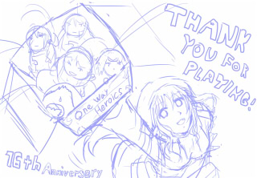
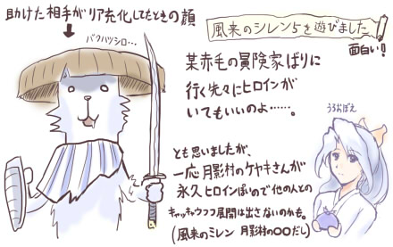
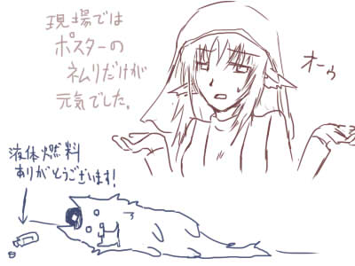
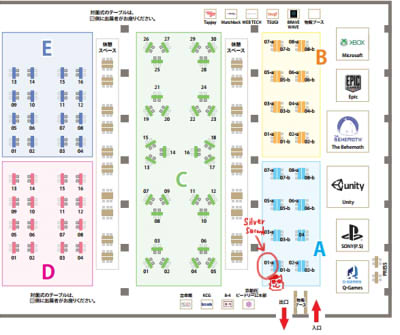
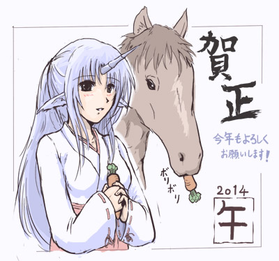
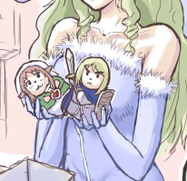

シルバーセカンド開発日誌
■
2014-12-13 (土) まもなくセールです▼
下書き

ということで、再度のお知らせです！
来たる12/17より、「シルエットノート」と「シルフェイド学院物語」の
2本をセール販売いたします！ 購入手段はウェブマネーのみです。
来年1月16日くらいまでは続ける予定ですので、
興味がある方で期末試験やお仕事などでお忙しい場合は、
落ち着いてからでも十分間に合います。
とはいえ、ご購入を検討中の方は、お使いのPCで動作するか確認するため
事前にそれぞれの体験版を試していただいたほうがいいと思います。
ウェブマネーの購入方法もゲーム内でおおざっぱに説明してますので、
「ウェブマネーとか買ったことない！」という方にもおすすめですよ。
それでは、12月17日をお楽しみに！
日が変わった瞬間あたりに価格変更予定です。
以下は気になった拍手返信です。しばらく返信できていませんでしたが、
たくさんのご意見ご感想、励ましのお言葉、本当にありがとうございます！
＞よかったら、片道勇者のループするマップについて教えてください。
＞ピクチャ表示しているか、創世中にマップを(0,0)に写し直しているのかと
＞思ったのですが、どうでしょうか？ .
後者が正解です！ 創世中にキャラクターやマップを
全部左にスライドさせています。
ウディタのマップとしては確か横500マスくらいしかないので、
右の端っこまでいったらまた主人公の位置を0に戻さないと
右の壁にぶち当たってしまうんですね。
（まあ、ウディタにはもともとマップのループ機能もあるので、
上手に計算できるならそれを使ってもよかったんですが…）
当初はその問題を解決するのがちょっと難しかったので、
一番最初は500マスくらいで終わるゲームを想定していました。
500マスはゲーム内の距離にして130km分くらいしかないので、並行世界では
1歩あたりの密度がとても濃いゲームになっていたかもしれません。
＞シルエットノートも学院物語も体験版はどちらも
＞配信&動画UPの方はOKでしたっけ？ .
利用規約には体験版と製品版を区別する書き方をしてなかったので、
基本的には体験版も「製品版と同じ」という扱いです。
シルフェイド学院物語の分は体験版もろとも
12月17日からOKになるのでいいとして、シルエットノートの
体験版くらいは公式で撮影した方がいいかもしれませんね。
ウェブマネーの買い方の説明にもなりますし。ようやく片道勇者+の開発に戻ってきてシナリオを書いてます！
なかなかネタバレしづらい部分のため、
あいかわらず日誌に載せられる内容がありません。
ということで、今週も引き続きお茶にごしコースです。
【不思ダン祭り】
今週は勉強がてら、開発の脇で
不思議のダンジョンシリーズをいろいろ遊んでみていました。
「風来のシレン5」と「ポケモン不思議のダンジョン空の探検隊」です。

＜風来のシレン5＞
ニンテンドーDSで2010年発売されたゲームです。
昔と比べて新しいシステムがたくさん搭載されてるのに全てが
うまく調和していて、スーパーファミコン（SFC)版で飽きるほどやった私でも
新鮮快適に遊べたのでまさに集大成という感じがします。
かなり攻めてる夜システムもいいアクセントになっています。
全編に渡って、「すぐ分かるシステムの穴」や「不便さ」も特になく、
「自分が開発途上で色々考えていたことなんぞ
とっくの昔に実現されてるじゃないか！」
という感触を覚えたので、片道勇者を作る前に
遊んでおけばよかったかもしれません。
特にインターフェース周りは勉強になりますね。
また、SFC版よりいいなと思ったのが、
初心者～中級者救済のための「積み上がっていく要素」！
最初から（いざというとき使い捨てにできる）仲間がいるとか、
仲間のレベルは自分が死んでも維持されるとか、育てた武器や防具だけは
死んでも後で回収できるシステムがある、ポイントカードで
致命的な状況を回避できるアイテムを入手しやすくなってるなど、
過去作よりもたくさんの初心者向け配慮が加えられています。
ローグライクゲームをより多くの人に遊んでもらうにあたって、
「初中級者の人が中級者以下のままでもクリアできるようにする」
という配慮は非常に重要な部分なので、
学ぶところは多かったように思います。
また、SFC版は何も考えずに合成しまくれば最強の万能武器が
作れてしまっていたのに対して、最近のシレンは武器ごとに
付けられる付与（印）の数が限定されているので
それぞれの状況やプレイヤーごとの最強装備が異なるのも面白い！
特に、武器種ごとに付与を付けられる最大数が違うシステムは
今からでも片道勇者に搭載してもいいかもしれませんね。
「弱い武器ほど伸びしろが大きい」とか。
でも片道は重さで棲み分けできてるからいいかな？
＜ポケモン不思議のダンジョン 空の探検隊＞
敵前逃亡は銃殺刑だグオオ！ と心の中で叫びながらやってます。
パートナーはイーブイです、はい。
※イーブイはHPが半分になると逃げ出すので
実質的にHPが半分しかないのと同じ
「属性が合わなくても割と進めるなあ」と思ったら、
ポケモン本家とは属性ダメージ補正が微妙に違うんですね。
「効果は抜群だ！」でも1.4倍。「効果がなかった！」でも半分は
ダメージが通るらしいので、そのあたり不思議のダンジョン用に
しっかり調整されてて安心です。途中で詰むかと思った。
またゲーム内容的にも、ポケモンという既存キャラを使うことで
基本的な情報があらかじめ分かる中でプレイできますから、
ポケモンファンの人にはすごく遊びやすいんだろうなと思います。
ローグライクは、「大部分の技やアイテムを覚えて情報がそろった中で
将来の状況まで予測して判断を楽しむ」という最終段階の遊び方まで
行くのにけっこう時間がかかるのが難点なんですが、
ポケモンという既存キャラを使うことで知識の問題の大半を
まるっと吹き飛ばしているのが企画的にスゲーと思います。
問題は、ポケモン赤緑しか遊んでない私には
敵の名前と属性がほとんど分からないことです。
とりあえず緑色っぽい敵がいたら火の粉を撒いてます。
私は最初の診断で「すなお」だったのでヒトカゲでした、ええ。
自機が知ってるポケモンで良かった……。
以下は気になった拍手返信です。いつもありがとうございます！
＞片道勇者プラスは販売サイトはsteamだけなのでしょうか？
＞また、値段の方はどのくらいを予定されてるのでしょうか？
ウチでも販売していいよとは聞いているので、
SilverSecond公式でも販売されると思います。
（ただしここで買う場合はSteamキーが付かないと思います）
値段は、海外展開を考えるとけっこうお安くしないと売れない気がしますので
これまでのゲームよりだいぶ安くなると思います。
内容的にも、500円～XXX円 というところじゃないでしょうか。
個人的な直感ではあまり多くの数は売れないと思っていますので
いずれ設定資料集か「片道勇者の作り方」的な本でも作って
生活の糧の足しにしようかなと思っています。
■
2014-04-02 (水) 2014エイプリル TRPG▼ということで、2014年のエイプリルフールも
去年に引き続きTRPGネタをやらせていただきました。
【2014年 エイプリルフールページへ】
今回の見所は新作の「シノビガミ」リプレイ！
（※ルールは冒険企画局さまより発売中）
忍者たちによる壮絶な就職活動が魅力です、ぜひお楽しみ下さい。
編集は主にンク（片道勇者TRPG）さんの中の人によって行われました！
本当にありがとうございます。
【TRPGシノビガミ リプレイ 『忍者就職活動記』】
（ややうさんくさそうなキャラ群が書けて私は満足です）
で、いつになるか分かりませんが、次回のシノビガミ料理編は
いちおうログ自体は本当にありますのでご期待ください。
ンクさんの中の人もお忙しいのと、私たちはブラッシュアップに
かなり時間を掛けてから出してるので、だいぶ先になると思います。
が、カオス度は折り紙付きですのでお楽しみに！
これらの準備でえらく時間を取ってしまったので
今日からまじめに開発します！
見て下さった皆さま、本当にありがとうございました！ ■
2014-03-15 (土) BitSummit 結果▼
ということで先週の金土日はBitSummitへの出展で
あわあわ言っておりました。終了時は完全に果てていました。

【物販 ストラップ】
現地で販売していたネムリのストラップは作った分の75％を余らせたので、
ただいま通販準備中です。土日はさすがに委託先もお休みっぽいので
まだ販売は始まりませんですが、3/16～20くらいには
販売が開始されそうな気がしています。でも予定は未定。
販売開始 しました！
https://silversecond.booth.pm/items/11095 (販売終了しました)
ストラップは1つ550円、送料700円です。
なお「クレジット払い」の場合、住所や個数などの入力をミスると
取り返しが付かない漢仕様なので、慎重な入力をお願いします。
「銀行振り込み」や「コンビニ支払い」なら、まちがった場合は
支払いせずに放置していれば自動でキャンセルされるようです。
送料がお高いので、「これでも構わん！」という方だけどうぞ。
他にまとめ買いできるような商品も置いておければよかったんですけれど、
残念ながら今のところはありません。
今回の内容はかなり長いので、追記に入れています。
ブースやゲームを取り上げて下さった記事や、
初イベントに対する感想、学んだことなどにご興味があればぜひどうぞ。
↓ ▼追記を開く▼
【取り上げて下さった記事紹介】
現地に行けなかった人の方が圧倒的に多いと思いますので、
雰囲気を感じる意味で当サイトのブース、またはゲームを
紹介してもらった記事をご紹介させていただきます。
もしかしたら抜けてるかもしれませんがご勘弁を！
【窓の杜 様によるイベントレポート】
http://www.forest.impress.co.jp/docs/special/20140310_638871.html(ｱｰｶｲﾌﾞ)
ブースの情報です。一番上に載ってて恐縮です、ありがとうございます！
【Yusuke Hisanos様による片道勇者プラス展示版のお話】
http://pilot-burner.blogspot.jp/2014/03/007-one-way-heroics-plus.html (ｱｰｶｲﾌﾞ)
片道勇者プラスの体験レポートを詳しく書いてくださっています、
ありがとうございます！
【Destructoid様によるBitSummitのゲーム紹介】（英語）
http://www.destructoid.com/here-are-destructoid-s-top-ten-games-from-bitsummit-271651.phtml(ｱｰｶｲﾌﾞ)
なぜか片道勇者（One Way Heroics）が順番関係なしのTop10に
選ばれてました。ありがとうございます！
【BitSummitアワード結果】 とウディタ周りの話
http://indiegames.com/2014/03/bitsummit_mmxiv_a_summary.html
（ｱｰｶｲﾌﾞ/英語）
BitSummit2014では、BitSummitアワードという賞が設けられました。
ビジュアルがすばらしいとか表現がすばらしいとか、
メディアの人に最も投票されたとか、そういった作品に送られる賞です。
で、実は3日目終わり頃に「ノミネートされたから後でステージに来てね」と
言われて待ってたんですが、発表時には最後まで名前が挙がらず、
「まあこれくらいが現実だわなー」とか心の底で強がってたら、
なんと上の記事にて、一般投票(Public Choice）部門の2位に
片道勇者(One Way Heroics)が入ってたことが分かりました！
投票してくださった皆さん、本当にありがとうございます！
一流の人に選んでもらえることも当然嬉しいんですが、
一般の人から愛されてる結果をいただけたことはもっとうれしいです。
これを励みにがんばります！
それとウディタつながりで一本ご紹介です。このアワードの
ストーリーテラー賞（Narrative Design）の2位に入っている
ARTIFACTS（樹ひかり様）の「マジックポーション・ストーリーズ」は
なんとウディタによるビジュアルノベルです！
RPG作成ツールで作られたノベルゲームとして、一般的な
ノベル作品と比べると演出が目新しく、こだわりが感じられる一作です。
素敵な作品、ありがとうございます！
おかげでウディタ製でも、作る人のアイデアやそれを磨き上げる能力次第で、
こういった場で注目してもらえるチャンスが発生するということを、
このアワードで証明できたと言えるのかもしれません！
そういう意味で、WOLF RPGエディターをご利用の皆さんに
少しでもロマンを与えられるお話になるといいなと思っております！
もちろんウディタじゃなくても、表現したいものをよりよく表現する開発ツールは
たくさん出ていますので、皆さんに合ったものをご利用くださいね。
また現地では、海外の一般のお客さんが「巡り廻る。」や「ブラッディドレス」、
「片道勇者（日本版）」の入ったパソコンを見せてくれたりして
「ウディタゲー楽しんでるよ！」というニュアンスを伝えてくださいました。
ウディタでゲームを作っておられる方も、いいのができたら、自信を持って
プッシュしてくださると何かチャンスが生まれるかもしれません！
うまく行けば海外展開も！？（※どれだけ儲かるかは保証しません）
※巡り廻る。 …… 耕(ｱｰｶｲﾌﾞﾍﾟｰｼﾞ) 様の作品
※ブラッディドレス…… あとらそふと様(ｱｰｶｲﾌﾞﾍﾟｰｼﾞ)の作品
【初イベントに出展した感想】
初イベント参加に対する私の理性的な感触としては、
毎日サイトに来て下さる方々の数に対して、会場に来られそうな人の数が
少なすぎるので、さすがに一般の方々への直接的な情報拡散効率は
あまり期待しないほうがよさそうかなーという印象でした。
（それでもSNSなどがある分、昔よりは格段に拡散力がアップしてるかも）
よって一般へのアピールは、メディアさんに取り上げられる確率とその効果に
大部分が影響されるので、それをどう見積もるかで参加する価値が変わると思います。
自身の情報拡散能力が高いか低いかでメディアさんの相対的な価値も
変わってくるので、この辺の手応えは人によって全然違うかもしれませんね。
それと「興味を持ってくれている企業さまへのコネクションができるかも？」
という期待もありそうで、そういった方々への興味を引くことができるゲームが
できたら、イベントでばりばりプッシュしていく戦法も有効になるかもしれません。
現地にいると全然分かりませんでしたが、ゲーム企業の方も
見に来ておられるような印象でした。
一方、感情的な面の感想としては、遊んで下さっている方々の顔が
生で見られたのが凄くうれしかったです。
ネットで配布してるだけだと、皆さんがどんな顔をして遊んでくださってるか、
また、どんな想いで初めて触るのかすっかり想像できなくなっていたので、
今回のイベントのおかげでだいぶ昔に忘れた初心を思い出せた気がします。
来て下さった皆さま、本当にありがとうございました！
現地ではボランティアの学生さんたちにもたくさん助けていただきました。
3日間、本当にありがとうございました！
いやー危うくトイレにも行けなくなるところでした。
今後のイベント参加に関しては
「展示イベントを活かせそうなゲームが作れた場合は積極的に出る」、
そうでないときは、「もう準備が済んでいて場所も近いなど
極めて手軽な場合に生のプレイヤーさんを見たいときに出る」
というくらいの期待度・参加頻度が自分には適しているかなーという感触でした。
あと連続出展可能日数の限界は3日間だということも分かりました。
4日だとかなりの確率で最終日に病欠してた！ あぶない！
こうしたイベント出展によるゲーム展開への効果は
まだまだ不透明ですが、イベントそのものは非常に面白かったです。
ただ忙しすぎて他のブースを見るどころじゃなかったので、
次は見に行く側で行ってみたいですね。
【イベント出展で学んだこと】
海外のお客さんも多かったため、出展の際は翻訳エンジン使ってでもいいので
英語版のゲーム紹介ペーパーを作っておいた方が絶対に楽だと思います！
私は原始人以下の英語と、（相手の知りたいことを予測する）微妙な
エスパー能力で何とか乗り切りましたが、それも事前の準備あってこそです。
後の自分のためにも、役に立ったものを以下に記載しておきます。
■ゲームの操作方法の紙（英語も併記、これで命拾いしました）
格闘ゲームのごとく、どこかに貼っておくと
操作説明をしなくていいので非常に便利です。
■ゲーム紹介（英語も併記・ラミネート加工してPOPにつるしてました）
■スケッチブック＆ペン 何度も聞かれることや、来た人が
迷いそうなことはどんどん追記してブースに立てておくと便利。
■ノートパソコンロック
お店であるような、PCにつなぐワイヤーのロックです。
ずっと誰か見張ってくれたので今回は役に立ちませんでしたが、
誰もいないときでも短時間なら席を離れやすいので安心です。
■データの盗難対策 気になる人は起動パスとか色々組みましょう。
■スタッフと一目で分かる服装
私は帽子や背中にSilverSecondのシールを貼っていました。
布シールははがれにくく、専用のTシャツなど用意しなくていいので楽です。
■ポスターは2枚を背中合わせにすることで、ポスター効果で
獲得できるお客さんの量が単純に2倍になります！
ミスプリントのポスターも持って行ったんですが、ここで役に立ちました。
裏から見ると真っ白ってのは、機会損失が発生してもったいないですからね。
実際ポスター効果がどれほどあったかは不明です。
■名刺 ゲーム紹介を裏に、サークル名を表に書いた名刺を作りました
最近はプリンタで両面名刺作れたりするので便利ですね。
まあ基本的には「私がスタッフです」とか「キー操作はこれこれです」といった、
「何度も聞かれそうなことや言わなきゃいけないことは先に言っておこう」
という話ですね！ どれだけ楽できるかに直結するので個人だと死活問題！
あと「開発者さんですか？」と聞かれることが多かったので、
頭のてっぺんに「↓開発者のSmokingWOLFです」って
看板立てておけばもっとよかったかもしれません。
その辺をボカして少しラクしたかったってのもあるんですけど。
また、初見さんにもゲームの特徴が分かりやすいよう、
ブースに「強制横スクロールRPG！」と目立つアピール文を
大きく貼っておいたりすれば、なおよかったんじゃないかなと思います。
が、今回はゲームの性質も含め、そこまで対応することを
最初から投げてました。明らかに初見向きじゃないし説明が大変！
ということもあったためか、そもそもお客さんの95％は
すでにプレイしてくださった方だったりします。
ブースまで来てくださって本当にありがとうございました！
以下は気になる拍手返信です。いつもありがとうございます！
＞ウルフさんの今までのシェアウェア作品は来月
＞4月の消費税8％に伴って値上げしますか？ .
ウェブマネーで一本1550円などにすると購入時の利便性が
極端に悪くなるので、たとえ儲けが減っても値上げはしませんよ！
実際はごく小規模の事業だと影響ないんですけれどね、消費税値上げ。
＞ネムリのストラップ買いに行けないのですが通販などは（略）
ただいま準備中ですので少々お待ちください！
うまくいけば、3/16～3/20までの間には販売開始されると思います。
この調子だと初回生産分でちょうどくらいのような気がするので、
もし購入をご検討の方はお早めにどうぞ。■
2014-03-06 (木) BitSummit告知▼
今週は3/7～3/9のBitSummitに向けての準備や、
確定申告のミスがあったことが発覚してドタバタしたり、
Steamリリース後の対応で忙しい場面がありました。
Steamのほうは発売5日後にして売り上げ上位ランキングの
100位外へとさようならしてしまいましたが、
ローカライズ費用は無事返せそうなので赤字は回避確定です！
買ってくださった皆さま、本当にありがとうございました！
さて、今回は間近に迫ったBitSummitのお知らせです。
BitSummitはインディーゲームの展示会みたいなイベントで、
日本だけでなく海外からもチームが集まる予定だそうです。
色んなゲームの体験ができると思いますので、お近くの方はぜひ。
で、そのBitSummitの一般開放デーは3/8（土）と3/9（日）の二日間です！
この日は一般の皆さまが入場可能で、場所は京都の「みやこめっせ」です。
オープン時間は、
3/8（土） 昼12時～夜19時まで
3/9（日） 朝10時～夕方17時まで
となっております！ 入場料は500円！
【SilverSecondは何を展示しているの？】
移動時に壊れていなければ、必死にかき集めてきたパソコン二台で
「片道勇者プラス」を展示しています。もちろんプレイ可能ですよ。
新クラスや新システム、新キャンペーンを体験していただくことができます。
新ストーリーは未実装です。あと新クラスの中で忍者が
ちょっと弱いんですが、事前のテストを受けて今後ちゃんとテコ入れ予定です！
が！ ぶっちゃけ、会場でサラっと遊ぶ分にはさほど大きな違いは
感じられないかもしれません。基本は同じですからね。
あと、せっかくの物理的なイベントということで、
生まれて初めての物販に挑戦することにしました。
販売するものはこれです！
ドドーン！ 片道勇者の登場キャラクターより、
ネムリ（薬士）の2.5cmメタルストラップです！
ネムリ部分だけでなく、ヒモの部分までワンセットで一つ税込500円予定です。
ご縁があって、同人サークル「ギロチン銀座」のギロチン様に
グッズをデザインしていただきました。誠にありがとうございます！
印刷物ならまだしも、こういうグッズは使える色やデザインの細かさの限界、
生産にかかる時間など、暗黙的な技術的制約が色々と多そうなので、
手軽に試行がしやすいネットの仕事とはやはりちょっと違うようです。
でご購入に関しては、現地で黒い帽子かぶってたりサングラスをかけてる人が
サンドイッチマンのようにお腹と背中に商品案内のプレートをぶら下げながら
ブースの近くに立ってるか座ってるかしていると思いますので、
一言、「ストラップくださーい」とお申し付けください。
容姿に多少の誤差があってもお気になさらず。
なるべくお釣りが出ない方が嬉しいです。
もしお持ちでなくとも、入場料金が500円であることを利用すれば、
500円玉を用意することは簡単かもしれません。
あまりにストラップの人気が高かったり、逆にあまりに余ってしまった場合は、
どこかに通販を委託したり追加生産することも検討しています。
が、ぶっちゃけ在庫をあまり持ちたくないので、やや慎重です。
売り切れてしまったらごめんなさい！
【どこにいるの？】
会場の入口を通り過ぎたら、たぶんそこから
左斜め前に20m以内の場所にいると思います。

※会場図（PDF）より
イベントに関する細かい情報は
すべてこちらのサイトに載っていますので、
じっくり見て回ろうとお考えの方はぜひチェックを！
http://bitsummitmmxiv.indie-stream.net/ (閉鎖済)
以下は拍手返信です、たくさんSteam掲載のお祝いコメント、
ご購入コメント、本当にありがとうございます！
＞実績妖精やめよっかな…の英語版名称がFind a
＞new jerbになってますけどjobのスペルミスですか？
私も最初見たときに気になって訳者の人に聞いたんですが、
そういうネタだそうです。
＞片道勇者プラスはSteamで販売されるのでしょうか？
まだ確定したことは言えませんが、Steamでは
片道勇者のDLC（ダウンロードコンテンツ）として
販売される線が有力だと思います。
事故が起きてどこかで交渉を大きくミスってしまった場合は
実現しませんので、成功するようPLAYISMさんの方に祈っておいてください。
＞加速モードもアンロック要素なのでしょうか？
＞アンロック要素じゃないとそれが普通になって
＞ありがたみも減る気がします。 .
プラス版では最初から使用可能です。プレイの幅を
広げるというよりは、快適なゲームプレイに必須なものですからね。
もしこれが「プレイの幅を広げる要素」なら、
積極的にアンロック要素にするつもりです。
新しく搭載されたクラスなどは、専用のシナリオをクリアして
ようやく入手できるというワクワク展開が待っておりますので、
ちょっとだけご期待下さい。
＞Steamらしく箱コンで快適プレイができるように、左スティックと
＞左十字どちらでも移動や選択ができるようにして頂けませんか？
確かに、私もいちいちコントローラのMODEボタンを押して
切り替えているので、もっと簡略化したいです。
キー入力周りはかなり危険性が高く、たくさんの検証が必要な
修正になると思うのですぐには直せないと思いますが、
次回のウディタ修正時の検討事項として入れさせていただきます。
＞フリーダ王女の英語での称号がQueenに
＞なってましたがPrincessなのでは？ .
欧米の文化的な背景でストーリー上そっちのほうが安全だったとか、
外見がそれっぽいからとか勝手に解釈してましたが、
詳しいことは訳者の人に聞いてみないと分かりませんね。
王様のお嫁さんという意味だったらちょっとウフン度が上がりますね。
ストーリー的には、義理の娘でも若すぎる奥さんでも内容は一緒なんですけど。
＞ちょっとした要望なのですが、スチーム版でクリアしたセーブデータ・ .
＞というよりかはクラスや次元倉庫といったシステム的な解放・周回要素を
＞エクスポートして、通常の+版にインポートする、みたいなことは .
＞追加実装出来そうでしょうか。 .
ご安心ください、すでに搭載済みです！ たとえばSteamで
プラス版を買って起動した場合、システムデータの内容を
通常版からプラス版にコピーするか最初に尋ねられる予定です。
コピーされるのは、次元倉庫の中身や伝説ポイント、
エピローグやクラスの解放状況、クリア状況などです。
（Steam版なら簡単なプレイ統計もコピーされます）
なお、アイテムの内部処理や装備の前置詞のバランスが変わったため、
「次元倉庫に入っていた装備」だけは「付与が全部消失」、
「耐久度が最大になる」という扱いを受けますのでご了承下さい。
一度データをコピーしたあとは、通常版とプラス版はそれぞれ
別個のセーブデータとして扱われます。片方のデータが
もう片方に影響を与えることはありません。
それでは、3/8～3/9は、よければぜひBitSummitまでお越し下さい。やってきました2014年！
ということで皆さまに年賀状です！

シルフェイド幻想譚/学院物語よりリクレール
と、馬！
いつもとそう変わらない年初ですが、今年も全力の限りを尽くします。
皆さんも、自分が一生懸命になれる道を
歩めることをお祈りしております！
それでは今年も一年、よろしくお願いいたします。
■
2013-12-24 (火) シルバーセカンド15周年！▼【シルバーセカンドは本日ついに15周年を迎えました！】
メリークリスマスイブ！
ということで1998年12月24日に始まったこのサイトも
今年でついに15周年！ 記念イラストをフォーユー！
クリックで全体表示

今年も片道勇者の年でした。海外進出が目玉なので
今回は英語タイトルの「One Way Heroics」で。
それにしても、振り返ってみると長い道のりを歩んできたものです。
15年という長い間には、楽しいことも大変なことも色々ありました。
ここまで続けられたという事実や今の状況を15年前の自分に伝えたら、
きっと当人も信じられないことでしょう。
また、ここまでの「道のり」を当時の自分に語っていたら、
さすがに同じ道をたどるのは無理だと返されるでしょう。
ここまでの道のりは、少しずつ皆さまのお声や手に支えられて、
奇跡的にたどることができた結果です。本当にありがとうございます。
そして私自身も、長い時間でだいぶ変わってしまいました。
もともとなかったような目標も年を取ってさらに薄らいできましたが、
逆に15年目を終えて叶った目標もいくつかあります。
一つは「現在の最後の目標は海外進出かな」と思っていたら、
思いがけない形で手を貸してくださる方々（PLAYISMの皆さま）に出会えて、
おかげさまでゲームの英語版リリースに至ることができたことです。
同時に「いつか海外の大きなコンテストに挑戦したい」という
非常に淡い願いも叶ってしまいました。本当に感謝の気持ちでいっぱいです。
もちろん、目標がなくなったから魂が抜けたようになる、なんてことはありません。
これまでも、今後も、ゲームを開発することに少しでも
たくさん全力の時間を費やしたいということは、私の変わらぬ願いです。
果たしてどこまで行けるか分かりませんが、とにかく
将来の自分が遊び直しても夢中で楽しめるゲームを作りたい。
願いはとてもシンプルです。
（これで生活できれば、もっと言うことなしですけれど）
それと同時に、皆さんに様々な面白さを伝えられるゲームを、
ジャンルを超えて一通り作りたいなとも思ってます。昔からたまに言ってますが、
「各ジャンルで自分にとっての最強ゲーを作る！」
は、今もサブ目標として胸の内に灯し続けています。
これからも地道にマイペースに、がんばっていきたいと思います。
今年も、たくさんの人に本当にお世話になりました。
サイトに来て下さる皆さま、コメントを寄せてくださる皆さま、
海外進出にお力を貸してくださった皆さま、お絵かきしてくださる皆さま、
家族のみんなや生活インフラを支えてくれる皆さまなどなど、
大勢の人にも支えられて、今の自分が成り立っています。
いま、これを読んでくださっている皆さま、
今年も本当にありがとうございました。
そしてよければ来年も、ときどき来てくださると幸いです。
年末までに用事も作業もやりたいこともたくさんあるので、
この更新が2013年最後の開発日誌になると思います。
次はまた、2014年の元旦にお会いしましょう。
それでは皆さま、よいお年を！ ■
2012-12-08 (土) 今週の日誌はお休みです▼
それを今も引きずっている状態のため、今回の日誌ではお絵かきその他の
面白そうな情報をお伝えできそうにありません。
申し訳ございませんが、今週の日誌は、
ゲーム関連情報なしという意味でお休みさせていただきます。
ちなみに症状は久々に最高体温３９．６度をマークしたり、
何か食べると即座に口からリバースするハードコアシーナだったり、
お尻から出るのがいつまで経っても固形物にならなかったり、
水を飲んでも１０分後に全部お尻から旅立っていく感じでした。
一番厳しい状態は何とか乗り越えられて、今はご飯を食べられるようになりましたが、
まだまだ腹痛が辛かったり、出るものが固形物にならなかったりする状況です。
有益な情報というと、丸二日くらい何も食べずに水だけで過ごしたら、
体重が２ｋｇ減ることが分かったくらいです。一日あたり１ｋｇもダイエット！
確かにこのペースなら、水だけ飲んで一ヶ月過ごしたら
ちょうど死んじゃうくらいの体重になるかもしれませんね。
周りを見ると、同じような症状で苦しんでいる人がちらほらおられるようですので、
みなさんくれぐれもお体にはお気を付けください。
もうしばらくの間は、やれそうな元気が出たタイミングを見計らって
進行状況を忘れない程度に開発しながら、体を休めたいと思います。■
2012-04-02 (月) エイプリル[シルモノ夢奇行]▼【今年のエイプリルネタ】
ということで、2012年のエイプリルフールは
エア同人誌ネタをやらせていただきました！
お絵かきの経験値アップを兼ねたものだったのですが、
せっかくなので漫画を描くことに挑戦してみようかなと
思ってトライしたところ、思った以上に難しくてびっくりしました。
「1ページ数のコマ数って思ったより入らないんだなあ」とか、
「ああ、こういうところに力を入れると全体がよく見えて、
こういうところは手を抜いてもそう気にならないのか」とか、
「慣れないうちは1ページ描くのに丸一日近くかかるのか！」とか、
ちょっと描いただけでもたくさんのことが学べた気がします。
表紙のモノリス絵は珍しくかわいく描けました（自分的には！）。
各漫画（のサンプル）を見たい方はこちらからどうぞ。
『シルモノ夢奇行』紹介ページへ

見て下さった全ての皆さま、および企画に乗ってくださったＨ野様、
本当にありがとうございました！
【シルフェイドエイプリルネタ】
ぽり０６５５様がノーマ学院公式サイトを作ってくださいました！
【ノーマ学院公式サイト】
http://senobishiten.cyber-ninja.jp/2012april/ (ｱｰｶｲﾌﾞ)
『ノーマ学院オリジナルプログラミング言語「Eshter」で動かす魔導工学』
など、魅力あふれるコンテンツいっぱいです。
こちらもドゥブッハァグハァブッハァードゥブッハァぜひ！
以下はエイプリルネタにいただいたご感想拍手コメントです。
＞本当にコピー本を作っておられたのかと、つい .
＞うっかり真に受けてしまいました。(´・ω・｀)
ありがとうございます！（？）
実際の所は私もよく分かってないのですが
最初はコピー本からやるといいよと耳にしました。
＞フェニキスかわいい…、モノリス漫画だけでも見たい…！
フェニキスは実はかわいいキャラなんですよ、ありがとうございます！
モノリス漫画はすでに16ページ分のストーリーがあるので
こっちのお話でしたら描こうと思えばいつか描けそうです。
そこまで真剣になれるモチベーションがあるかは分かりませんけれど！
＞さて、今回のエイプリールフール企画は何年後に.
＞実現するかな･･･?(ぇ 楽しみに待ってます！（ .
果たして実現するかは分かりませんが、
選択肢の一つとしてなかなか有力そうなのは分かったので、
ちょっと道を見失ったら、何かを求めて
こっちにも寄り道するのもいいかもしれませんね。
漫画の方が表現しやすそうなネタがたくさん出てきたら、
ちょっと実現への道を考えるかもしれません。
＞これは夢のような同人誌ですね。某氷野さんの .
＞ゲスト原稿も目がつぶれそうなくらいに .
＞輝いてます素晴らしい～。 .
Ｈ野さんが描いてくださった原稿は、最初見たときあまりに衝撃的でした。
もう少し自分も精進したいと思います！
＞モザイクの向こうには葉っぱ一枚のアルバートや .
＞教頭達のヘブンが広がってると思っていたのに!!!(血涙)
惜しい！ 実に惜しい！
アルバートと教頭もかなり有力な
ヒロイン候補だというのは心より認めます。 ■
2010-11-10 (水) 皆さまのお絵かきイラスト17▼シルフドラグーンゼロの話題が始まる前に、ちょっとおまけのお話。
皆さまから頂いたお絵かきイラストを
整理して、アップさせていただきました！
クリックでお絵かきイラスト集へ

いつもありがたく、ネタの刺激に目の保養にと、
大切に拝見させていただいております。
愛の籠もったイラスト、本当にありがとうございます。
Copyright © SmokingWOLF / Silver Second
 カテゴリ: その他
カテゴリ: その他 カテゴリ: その他
カテゴリ: その他